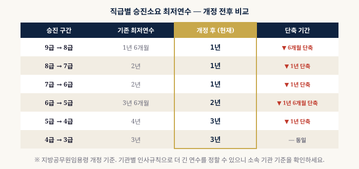
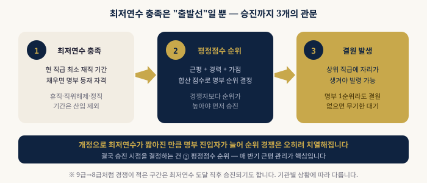

승진소요 최저연수, 9급에서 3급까지 한눈에
승진소요 최저연수는 상위 직급으로 승진하기 위해 현 직급에서 반드시 채워야 하는 최소 재직 기간입니다. 2026년 임용령 개정으로 대부분의 구간이 단축됐습니다. 아래 사다리에서 개정 전후를 한눈에 비교해보세요.
승진소요 최저연수란?
승진소요 최저연수는 상위 직급으로 승진하기 위해 현 직급에서 반드시 채워야 하는 최소 재직 기간입니다. 아무리 근무성적이 좋고 경력평정 점수가 높아도, 최저연수를 채우지 못하면 승진후보자명부에 올라갈 수 없습니다.
이 최저연수는 「지방공무원임용령」에서 정한 전국 공통 하한선입니다. 즉 어떤 기관도 이보다 짧은 기간으로 승진시킬 수 없습니다. 다만 실제 승진은 결원과 명부 순위에 따라 정해지므로, 최저연수를 채운 뒤에도 한동안 기다리는 경우가 많습니다. 따라서 최저연수는 "이 기간만 채우면 승진할 수 있는 조건"이 아니라 "이 기간을 채우지 못하면 승진 자체가 불가능한 조건"으로 이해하는 것이 정확합니다.
최저연수 계산에서 실무적으로 가장 혼동되는 부분은 임용일과 발령일의 기준입니다. 최저연수는 현 직급으로 임용된 날짜부터 기산하며, 전보나 부서 이동은 최저연수 산정에 영향을 주지 않습니다. 다만 승진임용, 강임, 직권면직 후 재임용 등 신분 변동이 있었던 경우에는 별도의 기산 규정이 적용될 수 있으므로 인사기록카드를 통해 정확한 기산일을 확인해야 합니다.
직급별 최저연수 상세표
| 현재 직급 | 승진 목표 | 기존 | 개정 후 (현재) | 비고 |
|---|---|---|---|---|
| 9급 | 8급 | 1년 6개월 | 1년 | 6개월 단축 |
| 8급 | 7급 | 2년 | 1년 | 1년 단축 |
| 7급 | 6급 | 2년 | 1년 | 1년 단축 |
| 6급 | 5급 | 3년 6개월 | 2년 | 경쟁 치열 |
| 5급 | 4급 | 4년 | 3년 | 1년 단축 |
| 4급 | 3급 | 3년 | 3년 | 동일 |

실제 승진까지 걸리는 기간
승진소요 최저연수는 「지방공무원 임용령」으로 정해져 모든 지방자치단체에 똑같이 적용됩니다. 서울시나 자치구라고 최저연수가 따로 늘어나지는 않습니다.
다만 실제로 승진하는 시점은 결원(TO)과 승진후보자명부 순위에 따라 정해집니다. 특히 6급→5급은 자리가 적어 최저연수 2년을 훨씬 넘겨 승진하는 경우가 많고, 기관과 직렬마다 차이가 큽니다. 소속 기관의 최근 승진자 평균 재직 기간을 인사부서 공지나 승진 의결 결과에서 확인해 두면 계획을 세우는 데 도움이 됩니다.
최저연수 산입 제외 기간
아래 기간은 승진소요 최저연수에 산입되지 않습니다.
| 제외 사유 | 산입 여부 |
|---|---|
| 일반 질병·가사·자기개발 휴직 | 미산입 |
| 직위해제 기간 | 미산입 |
| 징계 처분 기간 (강등·정직·감봉 등) | 미산입 |
| 징계에 따른 승진임용 제한 기간 (견책 6개월·감봉 12개월·강등·정직 18개월 등) | 미산입 |
| 공무상 질병·병역 휴직 | 산입 |
| 육아휴직 (법정 기간 내) | 산입 |
| 시보 기간 | 산입 |
최저연수를 채웠다고 바로 승진되는 건 아니다
최저연수는 승진 자격의 최소 조건일 뿐입니다. 실제 승진은 평정점수 순위와 결원 상황에 따라 결정됩니다. 9급 → 8급처럼 경쟁이 적은 직급은 최저연수 도달 직후 승진이 가능하지만, 6급 → 5급처럼 TO가 제한된 경우에는 최저연수를 훨씬 초과하더라도 대기하는 경우가 많습니다.
실제로 현장에서는 최저연수를 채운 뒤 1~3년을 추가로 대기하다가 승진하는 경우가 흔합니다. 이 대기 기간 동안의 근평 관리가 결국 승진 시점을 앞당기는 핵심 변수가 됩니다. 최저연수를 갓 채운 시점의 신규 대상자와, 이미 수년간 명부에서 대기해온 기존 대상자가 함께 경쟁하는 구조이기 때문에, 최저연수 충족 이후에도 근평·경력평정·가점 관리를 계속 이어가야 합니다.
따라서 승진을 준비하는 공무원이라면 최저연수 충족 여부를 확인하는 것과 별개로, 본인이 속한 직급의 평균 승진 소요 기간(최저연수 + 실질 대기 기간)을 함께 파악해두는 것이 현실적인 계획 수립에 도움이 됩니다.

최저연수 vs 근속승진 — 혼동하기 쉬운 2가지 제도 비교
승진소요 최저연수가 7·8·9급 1년, 6급 2년으로 단축되면서 현장에서 일반 승진(결원 승진)과 근속승진의 연수 기준을 헷갈리는 경우가 많습니다. 두 제도는 목적과 소요 기간이 완전히 다릅니다.
| 구분 | 일반 승진 (승진소요 최저연수) | 근속승진 (결원 없어도 승진) |
|---|---|---|
| 9급 → 8급 | 최저연수 1년 + 결원(TO) 필요 | 재직 5년 6개월 이상 (상위직급 결원 무관) |
| 8급 → 7급 | 최저연수 1년 + 결원(TO) 필요 | 재직 7년 이상 |
| 7급 → 6급 | 최저연수 1년 + 결원(TO) 필요 | 재직 11년 이상 (후보자 50% 이내 심사) |
| 6급 → 5급 | 최저연수 2년 + 심사/시험 | 근속승진 제도 없음 |
최저연수 계산 실전 예시 (휴직·징계가 섞인 경우): 예를 들어 2024년 7월 1일 8급으로 승진한 공무원이 2025년 중 육아휴직 1년을 사용했다면, 육아휴직은 자녀당 최대 3년까지 전부 산입되므로 2025년 7월 1일자로 7급 승진소요 최저연수(1년)를 그대로 충족합니다. 반면 같은 기간 일반 질병휴직 6개월을 사용했다면 그 6개월은 최저연수에서 빠져 2026년 1월 1일이 되어야 1년을 채우게 됩니다.
또한 「지방공무원 임용령」상 승진임용 범위(결원 1명당 배수: 1명 결원 시 7배수, 2명 시 5배수 등) 안에 들어가야 인사위원회 승진 심사 대상이 되므로, 최저연수를 채운 첫 해부터 명부 순위 추정 가이드와 평정점수 계산기로 내 배수 진입 가능성을 함께 점검해 두는 것이 좋습니다.
내 현재 평정점수와 예상 순위가 궁금하신가요?
직급과 날짜만 입력하면 자동으로 계산해드립니다.